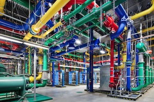

Efficiency: How we do it
Measuring and improving our energy use
We're focused on reducing our energy use while serving the explosive growth of the Internet. Most data centers use almost as much non-computing or "overhead" energy (like cooling and power conversion) as they do to power their servers. At Google we've reduced this overhead to only 12%. That way, most of the energy we use powers the machines directly serving Google searches and products. We take detailed measurements to continually push toward doing more with less—serving more users while wasting less energy.
We take the most comprehensive approach to measuring PUE
Our calculations include the performance of our entire fleet of data centers around the world—not just our newest and best facilities. We also continuously measure throughout the year—not just during cooler seasons.
Additionally, we include all sources of overhead in our efficiency metric. We could report much lower numbers if we took the loosest interpretation of the Green Grid's PUE measurement standards. In fact, our best site could boast a PUE of less than 1.06 if we used an interpretation commonly used in the industry. However, we're sticking to a higher standard because we believe it's better to measure and optimize everything on our site, not just part of it. Therefore, we report a comprehensive trailing twelve-month (TTM) PUE of 1.12 across all our data centers, in all seasons, including all sources of overhead.
 Figure 1:
Google data center PUE measurement boundaries. The average PUE for all Google data
centers is 1.12, although we could boast a PUE as low as 1.06 when using narrower
boundaries.
Figure 1:
Google data center PUE measurement boundaries. The average PUE for all Google data
centers is 1.12, although we could boast a PUE as low as 1.06 when using narrower
boundaries.
Google data center PUE performance
Our fleet-wide PUE has dropped significantly since we first started reporting our numbers in 2008. The TTM energy-weighted average PUE for all Google data centers is 1.12, making our data centers among the most efficient in the world.

Q4 2015 performance
| Fleet-wide quarterly PUE: | 1.11 |
| Fleet-wide trailing twelve-month (TTM) PUE: | 1.12 |
| Individual facility minimum quarterly PUE: | 1.08, Data Centers K, L, BM, BO |
| Individual facility minimum TTM PUE*: | 1.09, Data Center N |
| Individual facility maximum quarterly PUE: | 1.22, Data Centers I, U |
| Individual facility maximum TTM PUE*: | 1.31, Data Center AF |
* We report Individual Facility TTM PUE only for facilities with at least twelve months of operation.
Details:
For Q4, our fleet-wide TTM PUE was 1.12, which has remained constant for the past thirteen quarters. Our fleet-wide quarterly PUE was 1.11, equal to Q4 of the previous year.
For individual facilities, our lowest TTM PUE was 1.09, at Data Center N. Our lowest quarterly PUE was 1.08, at Data Centers K, L, BM, and BO.
Our highest TTM PUE was 1.31 at Data Center AF. This facility spent much of the past year with fairly low IT load, so we expect its PUE to improve as it gets closer to its design load. Our highest quarterly PUE was 1.22 at Data Centers I and U. These two facilities are also at relatively low IT load.
Q3 2015 performance
| Fleet-wide quarterly PUE: | 1.14 |
| Fleet-wide trailing twelve-month (TTM) PUE: | 1.12 |
| Individual facility minimum quarterly PUE: | 1.09,Data Centers N, BO |
| Individual facility minimum TTM PUE*: | 1.09,Data Center N |
| Individual facility maximum quarterly PUE: | 1.25,Data Center H |
| Individual facility maximum TTM PUE*: | 1.23,Data Center U |
* We report Individual Facility TTM PUE only for facilities with at least twelve months of operation.
Details:
For Q3, our fleet-wide TTM PUE was 1.12, which has remained constant for the past twelve quarters. Our fleet-wide quarterly PUE was 1.14, slightly higher than the 1.13 in Q3 of last year.
For individual facilities, our lowest TTM PUE was 1.09, at Data Center N. Our lowest quarterly PUE was also 1.09, at Data Centers N and BO.
Our highest TTM PUE was 1.23 at Data Center U. Our highest quarterly PUE was 1.25 at Data Center H. Data Center H is currently not supporting a full IT load, and we expect the PUE to improve when the facility runs closer to its design load.
Q2 2015 performance
| Fleet-wide quarterly PUE: | 1.12 |
| Fleet-wide trailing twelve-month (TTM) PUE: | 1.12 |
| Individual facility minimum quarterly PUE: | 1.09,Data Centers L, M, N |
| Individual facility minimum TTM PUE*: | 1.09,Data Centers M, N |
| Individual facility maximum quarterly PUE: | 1.24,Data Center U |
| Individual facility maximum TTM PUE*: | 1.24,Data Center U |
* We report Individual Facility TTM PUE only for facilities with at least twelve months of operation.
Details:
For Q2, our fleet-wide TTM PUE was 1.12, which has remained constant for the past eleven quarters. Our fleet-wide quarterly PUE was 1.12, slightly higher than the 1.11 in Q2 of last year.
For individual facilities, our lowest TTM PUE was 1.09, at Data Centers M and N. Our lowest quarterly PUE was also 1.09, at Data Centers L, M, and N.
Our highest TTM PUE was 1.24 at Data Center U. Our highest quarterly PUE was also 1.24 at Data Center U. This facility is not currently supporting a full IT load, and we expect the PUE to improve when the facility runs closer to its design load.
Q1 2015 performance
| Fleet-wide quarterly PUE: | 1.11 |
| Fleet-wide trailing twelve-month (TTM) PUE: | 1.12 |
| Individual facility minimum quarterly PUE: | 1.08,Data Center K |
| Individual facility minimum TTM PUE*: | 1.09,Data Center N |
| Individual facility maximum quarterly PUE: | 1.22,Data Center U |
| Individual facility maximum TTM PUE*: | 1.13,Data Centers D, E |
* We report Individual Facility TTM PUE only for facilities with at least twelve months of operation.
Details:
For Q1, our fleet-wide TTM PUE was 1.12, which has remained constant for the past ten quarters. Our fleet-wide quarterly PUE was 1.11, which matches what it was a year ago.
For individual facilities, our lowest TTM PUE was 1.09, at Data Center N. Our lowest quarterly PUE was 1.08, at Data Center K.
Our highest TTM PUE was 1.13, at Data Centers D and E. Our highest quarterly PUE was 1.22, at Data Center U. This facility is not currently supporting a full IT load, and we expect the PUE to improve when the facility runs closer to its design load.
Q4 2014 performance
| Fleet-wide quarterly PUE: | 1.11 |
| Fleet-wide trailing twelve-month (TTM) PUE: | 1.12 |
| Individual facility minimum quarterly PUE: | 1.09,Data Centers G, I, K, L, N, P |
| Individual facility minimum TTM PUE*: | 1.09,Data Center N |
| Individual facility maximum quarterly PUE: | 1.23,Data Center U |
| Individual facility maximum TTM PUE*: | 1.13,Data Centers C, D, E, H |
* We report Individual Facility TTM PUE only for facilities with at least twelve months of operation.
Details:
For Q4, our fleet-wide TTM PUE was 1.12, which has remained constant for the past nine quarters. Our fleet wide quarterly PUE was 1.11, which matches what it was a year ago.
Our lowest TTM PUE was 1.09, at Data Center N. Our lowest quarterly PUE was also 1.09, achieved by six facilities.
Our highest TTM PUE was 1.13, at Data Centers C, D, E, and H. Our highest quarterly PUE was 1.23 at Data Center U. This facility is not currently supporting a full IT load, and we expect the PUE to improve when the facility runs closer to its design load.
Q3 2014 performance
| Fleet-wide quarterly PUE: | 1.13 |
| Fleet-wide trailing twelve-month (TTM) PUE: | 1.12 |
| Individual facility minimum quarterly PUE: | 1.09,Data Centers M, N |
| Individual facility minimum TTM PUE*: | 1.10,Data Centers J, L, M, N, P |
| Individual facility maximum quarterly PUE: | 1.26,Data Center U |
| Individual facility maximum TTM PUE*: | 1.13,Data Centers C, D, G, H |
* We report Individual Facility TTM PUE only for facilities with at least twelve months of operation.
Details:
For Q3, our fleet-wide TTM PUE was 1.12, which has remained constant for the past eight quarters. Our fleet-wide quarterly PUE was 1.13, which is down from 1.14 in Q3 of last year.
Our lowest TTM PUE was 1.10, achieved by five facilities. Our lowest quarterly PUE for an individual facility was 1.09, achieved by Data Centers M and N.
Our highest TTM PUE for an individual facility was 1.13, at Data Centers C, D, G, H. Our highest quarterly PUE for an individual facility was 1.26, for Data Center U. This facility is not currently supporting a full IT load, and we expect the PUE to improve when the facility runs closer to its design load.
This quarter, we removed Data Center B from our public reporting, since it is being decommissioned. We also added new facilities to our public reporting.
Q2 2014 performance
| Fleet-wide quarterly PUE: | 1.11 |
| Fleet-wide trailing twelve-month (TTM) PUE: | 1.12 |
| Individual facility minimum quarterly PUE: | 1.08,Data Center N |
| Individual facility minimum TTM PUE*: | 1.10,Data Centers J, L, N |
| Individual facility maximum quarterly PUE: | 1.14,Data Centers B, C, E, F |
| Individual facility maximum TTM PUE*: | 1.14,Data Centers B, F |
* We report Individual Facility TTM PUE only for facilities with at least twelve months of operation.
Details:
For Q2, our fleet-wide quarterly PUE was 1.11, and our fleet-wide TTM PUE was 1.12. These are the same as the previous quarter's results.
In Q2, we had five sites reporting quarterly PUEs of 1.10 or less. Three sites had TTM PUEs of 1.10 or less in the same period.
Q1 2014 performance
| Fleet-wide quarterly PUE: | 1.11 |
| Fleet-wide trailing twelve-month (TTM) PUE: | 1.12 |
| Individual facility minimum quarterly PUE: | 1.09,Data Centers J, K, L, O, P |
| Individual facility minimum TTM PUE*: | 1.10,Data Centers J, L, N |
| Individual facility maximum quarterly PUE: | 1.16,Data Center F |
| Individual facility maximum TTM PUE*: | 1.14,Data Centers B, D & G |
* We report Individual Facility TTM PUE only for facilities with at least twelve months of operation.
Details:
For Q1, our quarterly PUE across the fleet was flat from the prior quarter, and remained at 1.11. The corresponding fleet-wide TTM PUE was 1.12, which matches what it was a year ago.
New this quarter is that we have removed Data Center A from reporting. For the past year we have shared that we were moving load out of this site, and in Q1 the load dropped below our 5 MW threshold for reporting. As a result of this change, our maximum site quarterly PUE has dropped from 1.21, which was data center A in Q4 2013, to 1.16, which was data center F in Q1 2014.
In Q1, we had six data centers reporting quarterly PUE of 1.10 or less, with five coming in at 1.09.
For TTM site PUE, data centers J, L and N repeated their Q4 performance by producing the lowest TTM PUEs in our fleet, at 1.10.
Q4 2013 performance
| Fleet-wide quarterly PUE: | 1.11 |
| Fleet-wide trailing twelve-month (TTM) PUE: | 1.12 |
| Individual facility minimum quarterly PUE: | 1.09,Data Centers E, L |
| Individual facility minimum TTM PUE*: | 1.10,Data Centers J, L, N |
| Individual facility maximum quarterly PUE: | 1.21,Data Center A |
| Individual facility maximum TTM PUE*: | 1.22,Data Center A |
* We report Individual Facility TTM PUE only for facilities with at least twelve months of operation.
Details:
We periodically review our PUE calculations to ensure consistency with The Green Grid guidelines for each site and consistency across sites. In Q4 2013, we updated our PUE formulas for 2013 to include more of our site infrastructure as overhead, which has resulted in many of our PUE values increasing slightly. In addition to mechanical and electrical losses, PUE overhead energy in our PUE calculations includes energy used in substations, transformers, water treatment plants, accessory buildings (such as employee cafeterias and gyms) and office space. Yes, that's more than we've seen anyone include in their PUE. We could strip all this out and have a PUE of 1.06 or less, but we believe it's better to measure--and optimize--all aspects of data center operations. All 2013 values have been updated to reflect the new calculations.
For Q4 2013, our fleet-wide quarterly PUE dropped to 1.11, and fleet-wide TTM remained flat at 1.12.
On an individual site basis, two sites had PUE of 1.09, and seven had PUE of 1.10 or less. Data center A continued to have the highest PUE at 1.21.
For our TTM PUEs, three sites had TTM PUEs of 1.10 or less.
Q3 2013 performance
| Fleet-wide quarterly PUE: | 1.14 |
| Fleet-wide trailing twelve-month (TTM) PUE: | 1.12 |
| Individual facility minimum quarterly PUE: | 1.10,Data Centers J, N |
| Individual facility minimum TTM PUE*: | 1.10,Data Centers F, J, N |
| Individual facility maximum quarterly PUE: | 1.25,Data Center A |
| Individual facility maximum TTM PUE*: | 1.22,Data Center A |
* We report Individual Facility TTM PUE only for facilities with at least twelve months of operation.
Details:
For Q3, our quarterly PUE across the fleet went up by 0.02, which was expected since Q3 has the hottest months of the year. The corresponding fleet-wide TTM PUE was 1.12, the same as the prior quarter.
As for the individual sites themselves, all but one of our sites continued to report quarterly PUE less than 1.20. Two of our sites have PUE of 1.10 or lower.
For individual site TTM PUE, three data centers reported a TTM PUE of 1.10 or lower.
We periodically review our PUE calculations to ensure consistency with The Green Grid guidelines for each site and consistency across sites. In Q4 2013, we updated our PUE formulas for 2013 to include more of our site infrastructure as overhead, which has resulted in many of our PUE values increasing slightly. In addition to mechanical and electrical losses, PUE overhead energy in our PUE calculations includes energy used in substations, transformers, water treatment plants, accessory buildings (such as employee cafeterias and gyms) and office space. Yes, that's more than we've seen anyone include in their PUE. We could strip all this out and have a PUE of 1.06 or less, but we believe it's better to measure--and optimize--all aspects of data center operations. All 2013 values have been updated to reflect the new calculations.
Q2 2013 performance
| Fleet-wide quarterly PUE: | 1.12 |
| Fleet-wide trailing twelve-month (TTM) PUE: | 1.12 |
| Individual facility minimum quarterly PUE: | 1.10,Data Centers J, L, N |
| Individual facility minimum TTM PUE*: | 1.09,Data Centers J |
| Individual facility maximum quarterly PUE: | 1.23,Data Center A |
| Individual facility maximum TTM PUE*: | 1.22,Data Center A |
* We report Individual Facility TTM PUE only for facilities with at least twelve months of operation.
Details:
For Q2, our quarterly PUE across the fleet remained flat at 1.12, as did our fleet TTM PUE.
On an individual site basis, three of our sites had PUE of 1.10 or less. Only data center A reported a PUE greater than 1.20.
For our individual site TTM PUE, three sites had 12-month TTM PUE of 1.10 or less. Only data center A reported a TTM PUE greater than 1.20.
We periodically review our PUE calculations to ensure consistency with The Green Grid guidelines for each site and consistency across sites. In Q4 2013, we updated our PUE formulas for 2013 to include more of our site infrastructure as overhead, which has resulted in many of our PUE values increasing slightly. In addition to mechanical and electrical losses, PUE overhead energy in our PUE calculations includes energy used in substations, transformers, water treatment plants, accessory buildings (such as employee cafeterias and gyms) and office space. Yes, that's more than we've seen anyone include in their PUE. We could strip all this out and have a PUE of 1.06 or less, but we believe it's better to measure--and optimize--all aspects of data center operations. All 2013 values have been updated to reflect the new calculations.
Q1 2013 performance
| Fleet-wide quarterly PUE: | 1.12 |
| Fleet-wide trailing twelve-month (TTM) PUE: | 1.12 |
| Individual facility minimum quarterly PUE: | 1.09,Data Center F |
| Individual facility minimum TTM PUE*: | 1.09,Data Center J |
| Individual facility maximum quarterly PUE: | 1.20,Data Center A |
| Individual facility maximum TTM PUE*: | 1.22,Data Center A |
* We report Individual Facility TTM PUE only for facilities with at least twelve months of operation.
Details:
For Q1, our fleet Quarterly PUE as well as fleet TTM PUE was 1.12. Compared to Q4 2012, our quarterly PUE is up by .01, and TTM remained flat.
As for the individual sites themselves, six of our sites posted a Quarterly PUE of 1.10 or less. All but one of our sites continued to report quarterly PUE less than 1.20.
For individual facility TTM PUE, all but one of our facilities showed PUE improvement as compared to Q1 2012. Data Center J reported a TTM PUE of 1.09, which is the same as its Q4 2012 TTM. Data center A continued to run at our highest PUE of 1.22.
We periodically review our PUE calculations to ensure consistency with The Green Grid guidelines for each site and consistency across sites. In Q4 2013, we updated our PUE formulas for 2013 to include more of our site infrastructure as overhead, which has resulted in many of our PUE values increasing slightly. In addition to mechanical and electrical losses, PUE overhead energy in our PUE calculations includes energy used in substations, transformers, water treatment plants, accessory buildings (such as employee cafeterias and gyms) and office space. Yes, that's more than we've seen anyone include in their PUE. We could strip all this out and have a PUE of 1.06 or less, but we believe it's better to measure--and optimize--all aspects of data center operations. All 2013 values have been updated to reflect the new calculations.
Q4 2012 performance
| Fleet-wide quarterly PUE: | 1.11 |
| Fleet-wide trailing twelve-month (TTM) PUE: | 1.12 |
| Individual facility minimum quarterly PUE: | 1.08,Data Centers F and J |
| Individual facility minimum TTM PUE*: | 1.09,Data Center J |
| Individual facility maximum quarterly PUE: | 1.19,Data Center A |
| Individual facility maximum TTM PUE*: | 1.23,Data Center A |
* We report Individual Facility TTM PUE only for facilities with at least twelve months of operation.
Details:
In Q4, our energy-weighted quarterly PUE dropped .03 to 1.11 from a Q3 value of 1.14. This ties with Q1 2012 as our best quarterly energy-weighted PUE value so far. Each of our sites had quarterly PUE values less than 1.20, with five sites reporting quarterly PUE values less than 1.10. For the first time, two of our sites reported PUE values of 1.08.
Our individual facility maximum quarterly PUE dropped from 1.25 to 1.19. This drop resulted from our work at Data Center A, where we had been moving IT load out to more efficient facilities over the past few quarters. The PUE at that site initially went up, but once we had moved enough IT load out of that site, we were able to reduce our cooling to better match the remaining IT load—resulting in an overall drop in PUE.
Our TTM energy-weighted PUE for Q4 was our best on record at 1.12, which was down .01 from last quarter. All but one of our sites reduced their TTM PUE values in Q4 2012, compared to Q4 2011. Data center J reported a TTM PUE of 1.09, making it our first site to report a TTM PUE less than 1.10.
Q3 2012 performance
| Fleet-wide quarterly PUE: | >1.14 |
| Fleet-wide trailing twelve-month (TTM) PUE: | 1.13 |
| Individual facility minimum quarterly PUE: | 1.08,Data Center J |
| Individual facility minimum TTM PUE*: | 1.10,Data Centers F and J |
| Individual facility maximum quarterly PUE: | 1.25,Data Center A |
| Individual facility maximum TTM PUE*: | 1.23,Data Center A |
* We report Individual Facility TTM PUE only for facilities with at least twelve months of operation.
Details:
In Q3 2012, our fleet-wide quarterly PUE increased by 0.02 from 1.12 to 1.14. We expect to see a slight increase in PUE as the weather warms between Q2 and Q3 in the Northern Hemisphere, and the 0.02 Q2-Q3 increase this year is in line with prior year increases. As compared to Q3 2011, all but one of our sites had better quarterly PUE results than they did a year ago.
Fleet-wide TTM PUE performance remained flat at 1.13 from Q2 to Q3.
The quarterly PUE at data center J dropped from 1.09 to 1.08 in Q3, which makes it our best performing data center. The TTM PUE for that same data center was 1.10, which was also our best TTM PUE. Ongoing reconfigurations at data center A resulted in our highest quarterly PUE of 1.25.
Q2 2012 performance
| Fleet-wide quarterly PUE: | 1.12 |
| Fleet-wide trailing twelve-month (TTM) PUE: | 1.13 |
| Individual facility minimum quarterly PUE: | 1.09,Data Center J |
| Individual facility minimum TTM PUE*: | 1.10,Data Center F |
| Individual facility maximum quarterly PUE: | 1.24,Data Center A |
| Individual facility maximum TTM PUE*: | 1.23,Data Center A |
* We report Individual Facility TTM PUE only for facilities with at least twelve months of operation.
Details:
In Q2 2012, our quarterly fleet PUE increased by 0.01 from 1.12 to 1.13. We expect to see a slight increase in PUE as the weather warms between Q1 and Q2 in the Northern Hemisphere, and this year the 0.01 Q1-Q2 increase was the smallest increase we've seen. Individually, eight of ten sites had better quarterly PUE results than they did in Q2 2011.
We included our fourteenth facility, Data Center N, because it meets our PUE reporting criteria of having 6 months of operation above 5 MW of load. Data Center N posted a quarterly energy-weighted PUE of 1.12, which is lower than our quarterly fleet PUE of 1.13.
Ongoing cooling system retrofits at data centers D and E reduced quarterly PUEs from 1.20 and 1.18 last year to 1.15 in Q2 2012. Data center A reported a higher than typical quarterly PUE of 1.23 as we continue to move IT load out of that site to more efficient facilities.
Fleet TTM performance held steady at 1.13 from Q1 to Q2.
Q1 2012 performance
| Fleet-wide quarterly PUE: | 1.11 |
| Fleet-wide trailing twelve-month (TTM) PUE: | 1.13 |
| Individual facility minimum quarterly PUE: | 1.08,Data Center F |
| Individual facility minimum TTM PUE*: | 1.11,Data Center F |
| Individual facility maximum quarterly PUE: | 1.20,Data Center A |
| Individual facility maximum TTM PUE*: | 1.22,Data Center A |
* We report Individual Facility TTM PUE only for facilities with at least twelve months of operation.
Details:
In Q1 2012, we posted another best quarterly fleet PUE performance at 1.11, down from last quarter's fleet PUE of 1.12. Seven different facilities posted quarterly best results, and four facilities returned quarterly energy-weighted PUEs of less than 1.10.
We included our twelfth facility, Data Center M, because it meets our PUE reporting criteria. Data Center M posted a quarterly energy-weighted PUE of 1.14, higher than the steady-state design target but inline with expectations due to commissioning activities.
Cooling system retrofits at data centers D and E reduced quarterly PUEs from 1.22 and 1.19 last year to 1.14 in Q1 2012. Data Center A reported a higher than typical quarterly PUE of 1.22 due to site work.
Fleet TTM performance also set a new best as our energy-weighted average PUE improved from 1.14 in Q4 to 1.13. Q1 also marked a full year since we added natural gas and office space to our overhead—yet both quarterly and TTM PUEs continue to improve.
Q4 2011 performance
| Fleet-wide quarterly PUE: | 1.12 |
| Fleet-wide trailing twelve-month (TTM) PUE: | 1.14 |
| Individual facility minimum quarterly PUE: | 1.08,Data Center F |
| Individual facility minimum TTM PUE*: | 1.11,Data Center F |
| Individual facility maximum quarterly PUE: | 1.20,Data Center A |
| Individual facility maximum TTM PUE*: | 1.21,Data Center A |
* We report Individual Facility TTM PUE only for facilities with at least twelve months of operation.
Details:
We posted our best quarterly PUE performance to date at 1.12, down from the previous best of 1.13 in Q1 2010. We accomplished this even after adding two new facilities and even during a quarter with warmer than average temperatures. Data Center F also set a new quarterly best PUE performance for an individual facility at 1.08, improving on the previous best of 1.09 by Data Center E in Q1 2011.
As mentioned, this quarter we included two additional facilities in our calculations because they meet our PUE reporting criteria (more than 5MW of critical load and operating for more than 6 months). New Data Centers K and L posted quarterly energy-weighted PUEs of 1.13 and 1.15 respectively. New facilities typically result in higher-than-design PUE because of commissioning activities, partial loading, and a lack of operational tuning.
Comparing 2011's TTM performance to 2010's, our fleet energy-weighted average PUE improved from 1.16 to 1.14. For individual facilities, Data Centers E, F, and J are all operating with a TTM PUE of 1.11, while only Data Center J operated at a TTM PUE of 1.12 in 2010.
Q3 2011 performance
| Fleet-wide quarterly PUE: | 1.16 |
| Fleet-wide trailing twelve-month (TTM) PUE: | 1.14 |
| Individual facility minimum quarterly PUE: | 1.12,Data Center J |
| Individual facility minimum TTM PUE*: | 1.11,Data Center J |
| Individual facility maximum quarterly PUE: | 1.24,Data Center A |
| Individual facility maximum TTM PUE*: | 1.20,Data Center A |
* We report Individual Facility TTM PUE only for facilities with at least twelve months of operation.
Details:
Typical warmer summer temperatures increased our fleet's quarterly energy-weighted PUE to 1.16 from 1.14 in Q2. Our quarterly fleet performance showed a significant improvement YoY from 1.20 in Q3 2010 due to less extreme weather and ongoing operational improvements.
Weather almost invariably makes Q3 post the highest quarterly energy-weighted PUE of the year. Yet our Q3 2011 results, the worst quarterly performance of the year (assuming we don't have an abnormal Q4), is the same or better than all but our best quarterly performance in 2008, 2009, and the first half of 2010.
Our trailing twelve-month energy-weighted average PUE continues to improve with our fleet performance being 1.14, the lowest level since we began reporting PUE data. The TTM energy-weighted PUE has improved every quarter since Q3 2009, and has improved from 1.17 YoY.
Q2 2011 performance
| Fleet-wide quarterly PUE: | 1.14 |
| Fleet-wide trailing twelve-month (TTM) PUE: | 1.15 |
| Individual facility minimum quarterly PUE: | 1.11,Data Center E |
| Individual facility minimum TTM PUE*: | 1.11,Data Center J |
| Individual facility maximum quarterly PUE: | 1.21,Data Center C |
| Individual facility maximum TTM PUE*: | 1.20,Data Center C |
* We report Individual Facility TTM PUE only for facilities with at least twelve months of operation.
Details:
In Q2 we updated how we calculate PUE to comply with The Green Grid's revised recommendations on measuring and reporting PUE. The change added two new overhead components: natural gas and electricity consumed by data center office space. These changes will have a modest negative impact on PUE. From Q2 onward, we will use the new methodology to report our PUE. However, we will not recalculate Q1 2011 and previous quarters to comply with the new guidelines.
Even with the inclusion of additional overhead terms, the quarterly energy-weighted average PUE was our best Q2 result to date at 1.14. We saw a small increase from 1.13 in Q'11, a strong performance given warmer Q2 temperatures. Quarterly fleet performance improved YoY from 1.17, driven by continued operational improvements, more favorable weather (compared to Q2 2010), and facilities reaching design targets. All but one facility improved YoY PUE for Q2.
Our trailing twelve-month energy-weighted average PUE continues to improve with our fleet performance being 1.15, the lowest level since we began reporting PUE data. The TTM energy-weighted PUE has improved every quarter since Q3 2009, and has improved from 1.17 YoY.
Q1 2011 performance
| Fleet-wide quarterly PUE: | 1.13 |
| Fleet-wide trailing twelve-month (TTM) PUE: | 1.16 |
| Individual facility minimum quarterly PUE: | 1.09,Data Center E |
| Individual facility minimum TTM PUE*: | 1.11,Data Center J |
| Individual facility maximum quarterly PUE: | 1.22,Data Center C |
| Individual facility maximum TTM PUE*: | 1.21,Data Center C |
* We report Individual Facility TTM PUE only for facilities with at least twelve months of operation.
Details:
Our Q1 '11 quarterly energy-weighted average PUE of 1.13 is another excellent fleet performance, matching our best previous in Q4 2010. Typical Q1 seasonal effects kept PUEs low. Data Center E set a new best energy-weighted quarterly PUE to date of 1.09 and Data Center J set a new best TTM PUE of 1.11. Both are excellent performances that are approaching facility design targets.
Q1 '11 TTM energy-weighted average PUE for our fleet also stayed at the previous low 1.16 set last quarter. YoY only data centers C and D had increased quarterly PUEs, in part due to retrofit work being done. All other facilities posted improved PUEs YoY due to continued optimization in facility operations.
Q4 2010 Performance
| Fleet-wide quarterly PUE: | 1.13 |
| Fleet-wide trailing twelve-month (TTM) PUE: | 1.16 |
| Individual facility minimum quarterly PUE: | 1.10,Data Center E |
| Individual facility minimum TTM PUE*: | 1.12,Data Center J |
| Individual facility maximum quarterly PUE: | 1.22,Data Center C |
| Individual facility maximum TTM PUE*: | 1.21,Data Center A |
* We report Individual Facility TTM PUE only for facilities with at least twelve months of operation.
Details:
Our Q4 '10 quarterly energy-weighted average PUE of 1.13 is the best result since we started reporting, beating the PUE of 1.15 in Q1 '10. All but one facility (Data Center C) reported sub-1.20 PUE, and half of the facilities reported PUEs of less than 1.12. Typical seasonal effects were the primary driver for QoQ improvements.
The Q4 '10 TTM energy-weighted average PUE also set a new low of 1.16, down from 1.17 in Q3, highlighting steady continuous improvement of the entire fleet. YoY, only one facility (Data Center C), currently undergoing a retrofit, reported a higher PUE in Q4'10 than Q4 '09 â€" all other facilities improved their efficiency. We achieved YoY improvements by improving execution on optimal operational practices and having our facilities operate closer to the design targets.
Q3 2010 performance
| Fleet-wide quarterly PUE: | 1.20 |
| Fleet-wide trailing twelve-month (TTM) PUE: | 1.17 |
| Individual facility minimum quarterly PUE: | 1.12,Data Center J |
| Individual facility minimum TTM PUE*: | 1.13,Data Center B |
| Individual facility maximum quarterly PUE: | 1.24,Data Center A |
| Individual facility maximum TTM PUE*: | 1.21,Data Center H |
* We report Individual Facility TTM PUE only for facilities with at least twelve months of operation.
Details:
On average, the Q3 wet-bulb temperatures at our facilities were the highest since we started reporting PUE. This weather drove an expected QoQ increase in the total quarterly energy-weighted average PUE to 1.20 but the TTM PUE remained flat at 1.18. Even with unfavorable weather, our fleet's quarterly performance improved YoY from 1.22 to 1.20 and the TTM performance improved from 1.19 to 1.18. Data Center J's continued operational tuning resulted in a quarterly (and facility) best PUE at 1.12, a strong performance.
Q2 2010 performance
| Fleet-wide quarterly PUE: | 1.17 | |
| Fleet-wide trailing twelve-month (TTM) PUE: | 1.18 | |
| Individual facility minimum quarterly PUE: | 1.13,Data Center J | |
| Individual facility minimum TTM PUE*: | 1.13,Data Center B | |
| Individual facility maximum quarterly PUE: | 1.22,Data Center A | |
| Individual facility maximum TTM PUE*: | 1.23,Data Center H |
* We report Individual Facility TTM PUE only for facilities with at least twelve months of operation.
Details:
Typical seasonal effects resulted in a QoQ increase in the total quarterly energy-weighted average PUE to 1.17. On average, the Q2 wet-bulb temperatures at our facility locations were higher than those of 2009, yet our fleet's quarterly performance improved YoY from 1.20. For the first time Data Center J posted the best quarterly PUE at 1.13 due to improved operations and tuning. The trailing twelve-month energy-weighted average PUE for all facilities remained at 1.18, an improvement from 1.19 in Q2 2009. Peak summer weather will likely see an increase in the fleet's quarterly energy-weighted average PUE for Q3.
Q1 2010 performance
| Fleet-wide quarterly PUE: | 1.15 |
| Fleet-wide trailing twelve-month (TTM) PUE: | 1.18 |
| Individual facility minimum quarterly PUE: | 1.10,Data Center E |
| Individual facility minimum TTM PUE*: | 1.13,Data Center B |
| Individual facility maximum quarterly PUE: | 1.20,Data Center C |
| Individual facility maximum TTM PUE*: | 1.24,Data Center A |
* We report Individual Facility TTM PUE only for facilities with at least twelve months of operation.
Details:
Q1 '10 was the best quarterly fleet performance recorded, with the quarterly energy-weighted average PUE of all facilities falling to 1.15 from 1.16 in Q4. All but one facility posted a PUE of 1.2 or less. The improvement was due to the typical seasonal effects and improved operational strategies at Data Centers G, H, I, and J. Data Center E also posted the best quarterly PUE performance from an individual facility to date at 1.10. The trailing twelve-month energy-weighted average PUE improved to 1.18 from 1.19 the same quarter a year ago. We expect higher PUE values in Q2 due to less favorable ambient weather conditions.
Q4 2009 performance
| Fleet-wide quarterly PUE: | 1.16 |
| Fleet-wide trailing twelve-month (TTM) PUE: | 1.19 |
| Individual facility minimum quarterly PUE: | 1.11,Data Center E |
| Individual facility minimum TTM PUE*: | 1.13,Data Center B |
| Individual facility maximum quarterly PUE: | 1.21,Data Center C |
| Individual facility maximum TTM PUE*: | 1.21,Data Center A |
* We report Individual Facility TTM PUE only for facilities with at least twelve months of operation.
Details:
Seasonal effects and operational improvements enabled QoQ efficiency improvements for all data centers in Q4, reducing the quarterly energy-weighted average PUE of all facilities to 1.16 from 1.22 in Q3. The best quarterly efficiency performance from an individual facility was a PUE of 1.11 (Data Center E), tying our lowest reported value to date (Data Center B, Q1 '09). The trailing twelve-month energy-weighted average PUE improved to 1.19 from 1.20 the same quarter a year ago. The best TTM energy-weighted PUE for an individual facility dropped to 1.13 (Data Center B), the lowest TTM PUE to date. Data Centers G, H, I, and J continue to mature operationally, improving their PUE. We expect this trend to continue until they reach the steady state design targets.
Q3 2009 performance
| Fleet-wide quarterly PUE: | 1.22 |
| Fleet-wide trailing twelve-month (TTM) PUE: | 1.19 |
| Individual facility minimum quarterly PUE: | 1.15,Data Center B |
| Individual facility minimum TTM PUE*: | 1.14,Data Center B |
| Individual facility maximum quarterly PUE: | 1.33,Data Center H |
| Individual facility maximum TTM PUE*: | 1.21,Data Center A |
* We report Individual Facility TTM PUE only for facilities with at least twelve months of operation.
Details:
We added one new facility, Data Center J, to our PUE report. Overall, our fleet QoQ results were as expected. The Q3 total quarterly energy-weighted average PUE of 1.22 was higher than the Q2 result of 1.20 due to expected seasonal effects. The trailing twelve-month energy-weighted average PUE remained constant at 1.19. YoY performance improved from facility tuning and continued application of best practices. The quarterly energy-weighted average PUE improved from 1.23 in Q3'08, and the TTM PUE improved from 1.21. New data centers G, H, I, and J reported elevated PUE results as we continue to tune operations to meet steady-state design targets.
Q2 2009 performance
| Fleet-wide quarterly PUE: | 1.20 |
| Fleet-wide trailing twelve-month (TTM) PUE: | 1.19 |
| Individual facility minimum quarterly PUE: | 1.15,Data Center B |
| Individual facility minimum TTM PUE*: | 1.14,Data Center B |
| Individual facility maximum quarterly PUE: | 1.30,Data Center H |
| Individual facility maximum TTM PUE*: | 1.22,Data Center A |
* We report Individual Facility TTM PUE only for facilities with at least twelve months of operation.
Details:
This quarter three new data centers (G,H, and I) met inclusion criteria, bringing the total number of conforming facilities to nine. The PUE of the new facilities is elevated due to commissioning and bring-up activities. The combined impact of partially-commissioned facilities and traditional seasonal effects resulted in a QoQ increase of our quarterly energy-weighted average PUE, bringing it to 1.20. The TTM energy-weighted average PUE for all conforming facilities, however, remained at 1.19, despite warmer temperatures. This result is due to continued YoY operational improvements for Google's fully commissioned data centers. Both the minimum and maximum individual facility TTM PUE results decreased in this quarter as a result of operational improvements.
Q1 2009 performance
| Fleet-wide quarterly PUE: | 1.15 |
| Fleet-wide trailing twelve-month (TTM) PUE: | 1.19 |
| Individual facility minimum quarterly PUE: | 1.11,Data Center F |
| Individual facility minimum TTM PUE*: | 1.15,Data Center B |
| Individual facility maximum quarterly PUE: | 1.20,Data Center C |
| Individual facility maximum TTM PUE*: | 1.23,Data Center A |
* We report Individual Facility TTM PUE only for facilities with at least twelve months of operation.
Details:
The efficiency of all data centers again improved QoQ due to further optimization and cooler temperatures. The quarterly energy-weighted average PUE dropped to 1.15 from 1.16 in Q4, and the quarterly PUE values for each data center was less than or equal to 1.20. The collective TTM energy-weighted average PUE fell to 1.19 from 1.20. The best-performing individual facility quarterly PUE dropped to 1.11 (Data Center F) from 1.13 in Q4 (Data Center E). Data Center F had the highest PUE in Q3 '08 due to a low IT load and incomplete commissioning activity at that time. Data Center A yielded YoY reductions due to completed cooling plant improvements. Data Centers C and D improved YoY because of increased IT load, which better utilized the cooling plant resources.
Q4 2008 performance
| Fleet-wide quarterly PUE: | 1.16 |
| Fleet-wide trailing twelve-month (TTM) PUE: | 1.20 |
| Individual facility minimum quarterly PUE: | 1.13,Data Center E |
| Individual facility minimum TTM PUE*: | 1.15,Data Center B |
| Individual facility maximum quarterly PUE: | 1.21,Data Center A |
| Individual facility maximum TTM PUE*: | 1.24,Data Center A |
* We report Individual Facility TTM PUE only for facilities with at least twelve months of operation.
Details:
Efficiency of all data centers improved QoQ due to continued optimization and cooler temperatures. The quarterly energy-weighted average PUE dropped to 1.16 from 1.22 in Q3 while the collective TTM energy-weighted average PUE fell to 1.20 from 1.21. The best performing individual facility quarterly PUE dropped to 1.13 (Data Centers E, F) from 1.17 in Q3 (Data Center B). All facilities made YoY efficiency improvements, with Data Center A showing strong results from cooling plant improvements designed to improve free cooling.
Data Centers E and F moved through commissioning and into full operation, both yielding an excellent quarterly PUE score of 1.13 and 1.14, respectively. Looking back, Figure 2 shows the large daily variations and higher PUE quieting to an expected lower value.During commissioning, at times all chillers and air movers were run simultaneously in order to test proper operation of the facility. Concurrently, IT equipment load was small because the facility was in the early stages of deployment. These factors caused the higher Q3'08 average PUE values as well as significant day-to-day variations. Q4'08 saw these commissioning activities taper off, and the favorable seasonal conditions led to lower, stable PUE values.
Q3 2008 performance
| Fleet-wide quarterly PUE: | 1.23 |
| Fleet-wide trailing twelve-month (TTM) PUE: | 1.21 |
| Individual facility minimum quarterly PUE: | 1.17,Data Center B |
| Individual facility minimum TTM PUE*: | 1.15,Data Center B |
| Individual facility maximum quarterly PUE: | 1.30,Data Center F |
| Individual facility maximum TTM PUE*: | 1.25,Data Center A |
* We report Individual Facility TTM PUE only for facilities with at least twelve months of operation.
Details:
Initial public release of PUE data reported TTM energy-weighted PUE values for six Google data centers satisfying the inclusion criteria. Data centers E & F show the effects of commissioning including large day-to-day PUE fluctuations and are running above the steady-state design efficiency. Seasonal influences can be seen in the Q2-Q3 time frame across all data centers.
Measurement FAQs
What's the average PUE of other data centers?
According to the Uptime Institute's 2014 Data Center Survey, the global average of respondents' largest data centers is around 1.7.
Why does our data vary?
Our facilities have different power and cooling infrastructures, and are located in different climates. Seasonal weather patterns also impact PUE values, which is why they tend to be lower during cooler quarters. We've managed to maintain a low PUE average across our entire fleet of data center sites around the world—even during hot, humid Atlanta summers.
How do we get our PUE data?
We use multiple on-line power meters in our data centers to measure power consumption over time. We track the energy used by our cooling infrastructure and IT equipment on separate meters, giving us very accurate PUE calculations. We account for all of our power-consuming elements in our PUE by using dozens or even hundreds of power meters in our facilities.
What do we include in our calculations?
When measuring our IT equipment power, we include only the servers, storage, and networking equipment. We consider everything else overhead power. For example, we include electrical losses from a server's power cord as overhead, not as IT power. Similarly, we measure total utility power at the utility side of the substation, and therefore include substation transformer losses in our PUE.
 Figure 3:
Google includes servers, storage, and networking equipment as IT equipment power.
We consider everything else overhead power.
Figure 3:
Google includes servers, storage, and networking equipment as IT equipment power.
We consider everything else overhead power.
Equation for PUE for our data centers

ESIS Energy consumption for supporting infrastructure power substations feeding the cooling plant, lighting, office space, and some network equipment
EITS Energy consumption for IT power substations feeding servers, network, storage, and computer room air conditioners (CRACs)
ETX Medium and high voltage transformer losses
EHV High voltage cable losses
ELV Low voltage cable losses
EF Energy consumption from on-site fuels including natural gas & fuel oils
ECRAC CRAC energy consumption
EUPS Energy loss at uninterruptible power supplies (UPSes) which feed servers, network, and storage equipment
ENet1 Network room energy fed from type 1 unit substitution
We're driving the industry forward
We've made continual improvements since we first disclosed our efficiency data in 2008. As we've shared the lessons we've learned, we're happy to see a growing number of highly efficient data centers. But this is just the beginning. Through our best practices and case studies, we continue to share what we've learned to help data centers of any size run more efficiently.
The data center industry uses the measurement PUE, or power usage effectiveness, to measure efficiency. A PUE of 2.0 means that for every watt of IT power, an additional watt is consumed to cool and distribute power to the IT equipment. A PUE closer to 1.0 means nearly all of the energy is used for computing.
Data centers are complex systems with many mechanical, electrical and controls components. Read about how we've developed a machine learning algorithm that learns from operational data to model plant performance and predict PUE.
Building custom, highly-efficient servers
Google's servers are high-performance computers that run all the time. They're the core of our data centers, and we've designed them to use as little energy as possible. We do this by minimizing power loss and by removing unnecessary parts. We also ensure our servers use little energy when they're waiting for a task, rather than hogging power when there’s less computing work to be done.
We optimize the power path.
A typical server wastes up to a third of the energy it uses before any of that energy reaches the parts that do the actual computing. Servers lose the most energy at the power supply, which converts the AC voltage coming from a standard outlet to a set of low DC voltages. They then lose more at the voltage regulator, which further converts the power supply's output to the voltages required by microchips. Designed with low efficiency standards in order to save on initial cost, traditional servers end up costing much more in electricity in the long run.
Google servers are different. Since 2001, we've been designing them to be more efficient. For many years now, we've used very efficient power supplies. Similarly, we use highly efficient voltage regulator modules to ensure that most of the power goes to the components that do the actual computing work. We’ve cut out two of the AC/DC conversion stages by putting back-up batteries directly on the server racks. We estimate an annual savings of over 500 kWh per server—or 25%—over a typical system.
We customize our servers to stick with the essentials.
When it comes to hardware, we only use what's necessary for our applications to run. We remove unnecessary components like peripheral connectors and video cards. We also optimize our servers and racks to use minimal fan power. The fans spin just fast enough to keep our machines cool enough to run.
We encourage all of our suppliers to produce parts that operate efficiently whether they’re idle, operating at full capacity, or at lower usage levels—an idea we introduced as "energy proportionality" in 2007. Our study shows that more energy-proportional systems can cut total energy use in half at large data centers.
Blue LEDs on this row of servers tell us everything is running smoothly. We use LEDs because they are energy efficient, long lasting, and bright.
Controlling the temperature of our equipment
To help our equipment function optimally while continuing to save energy, we manage the temperature and airflow in our data centers and machines in simple, cost-effective ways.
We raise the thermostat to 80°F.
One of the simplest ways to save energy in a data center is to raise the temperature. It’s a myth that data centers need to be kept chilly. According to expert recommendations and most IT equipment manufacturers' specifications, data center operators can safely raise their cold aisle to 80°F or higher. By doing so, we significantly reduce facility energy use.
We plan by using thermal modeling.
We use thermal modeling to locate “hot spots” and better understand airflow in the data center. In the design phase, we physically arrange our equipment to even out temperatures in the facility. Even after that, we can move certain equipment like computer room air conditioners (CRACs) to reduce hot spots and even out the ambient temperature—ultimately reducing the amount of time the CRAC must run.
We find inexpensive ways to manage airflow.
To cut cooling costs and save energy, we prevent the “hot aisle” air behind the server racks from mixing with the “cold aisle” in front of the server racks. In our large data centers, we use appropriate ducting and permanent enclosures. In addition, we take simple measures well-suited for smaller “closet” style data centers. For instance, we:
- Use blanking panels (or flat sheets of metal) to close off empty rack slots and prevent hot aisle air from seeping into to the cold aisle.
- Hang plastic curtains (like those used in commercial refrigerators) to seal off the cold aisle.
- Enclose areas with components that run hotter (such as power supply units or PSUs) with plastic curtains.
These efforts help to reduce the total amount of energy used for cooling. At the same time, they ensure that the cooler air we send into the cold aisles is truly cool enough to do its job.
Plastic curtains in the network room prevent the hot air behind the server racks from mixing with the colder air in front of the server racks.
Cooling with water—not chillers
The electricity that powers a data center ultimately turns into heat. Most data centers use chillers or air conditioning units to cool things down, requiring 30-70% overhead in energy usage. At Google data centers, we often use water as an energy-efficient way to cool instead.
We trap hot air and cool our equipment with water.
We've designed custom cooling systems for our server racks that we've named “Hot Huts” because they serve as temporary homes for the hot air that leaves our servers—sealing it away from the rest of the data center floor. Fans on top of each Hot Hut unit pull hot air from behind the servers through water-cooled coils. The chilled air leaving the Hot Hut returns to the ambient air in the data center, where our servers can draw the chilled air in, cooling them down and completing the cycle.We take advantage of evaporative cooling.
Evaporation is a powerful tool. In our bodies, it helps us maintain our temperature even when outside temperatures are warmer than we are. It also works similarly in our cooling towers. As hot water from the data center flows down the towers through a material that speeds evaporation, some of the water turns to vapor. A fan lifts this vapor, removing the excess heat in the process, and the tower sends the cooled water back into the data center.
We use the natural cooling power of sea water.
Evaporating water isn't the only way to free cool. Our facility in Hamina, Finland uses sea water to cool without chillers. We chose this location for its cold climate and its location on the Gulf of Finland. The cooling system we designed pumps cold water from the sea to the facility, transfers heat from our operations to the sea water through a heat exchanger, and then cools this water before returning it to the gulf. Because this approach provides all of our needed cooling year round, we haven't had to install any mechanical chillers at all.
We save and recycle water.
To better conserve water, we power two of our data centers with 100% recycled water, and capture rainwater for cooling a third. The idea is simple: instead of using potable (or drinking) water for cooling, we use non-drinkable sources of water and clean it just enough so we can use it for cooling.
We use recycled water from various sources. Our Douglas County facility treats city waste water, while our Belgium facility pulls water from an industrial canal. There, we use a large tank filled with fine sand to filter out small particles, leaving the water completely clear (although not suitable for drinking). While it's not always possible or cost-effective to use recycled water, we're optimistic that we can find sustainable solutions for the majority of our water use.

Colorful pipes carry water in and out of the data center. The blue pipes supply cold water and the red pipes return the warm water back to be cooled.
Extending our equipment lifecycle
From the moment we decide to purchase a piece of equipment to the moment we retire it, we reduce, reuse, and recycle as much as we can.
We reduce by sourcing locally
Whenever possible, we use local vendors for heavier components like our server racks. Even if material is more expensive locally, we can recoup the extra cost by reducing shipping charges from farther locations where the material may be cheaper. By limiting the shipping distance, we reduce the environmental impact of transportation.
We reuse existing machines
Before we buy new equipment and materials, we look for ways to reuse what we already have. As we upgrade to newer, higher-speed servers, we repurpose older machines either by moving them to services that don’t require as much processing power, or by removing and reusing the components that are still in good working condition.
Since 2007, we've remanufactured and repurposed enough outdated servers to avoid buying over 300,000 new replacement machines.
We recycle as much as we can
At each location, we maximize the recycling of all our data center material. When we can’t repurpose our equipment, we completely erase any components that stored data, and then resell them into the market, giving this equipment a second life. We break down any components that can’t be sold into raw materials like copper, steel, aluminum, and plastics for responsible recycling.
As part of our commitment to keeping our users' data safe, we destroy failed hard drives on site before shredding and recycling them.